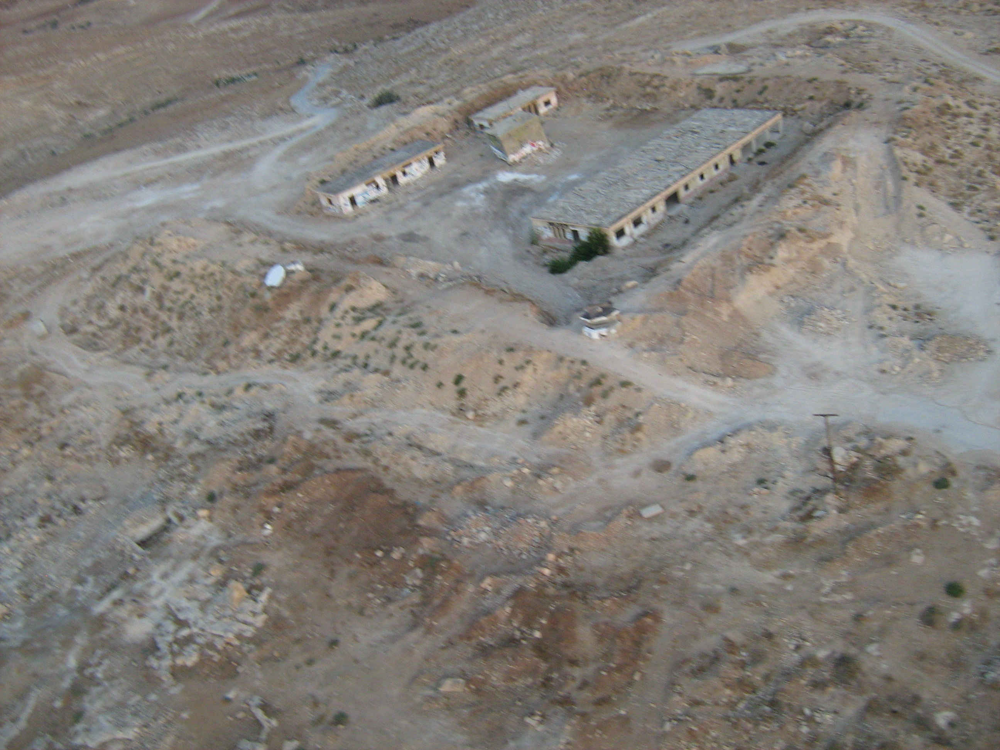

Due to the need for cheap and up-to-date imagery, a major part of the Grassroots Mapping project has been the design and use of low-cost platforms for capturing images of the ground from above. The use of kites and balloons to raise consumer-level 'point-and-shoot' cameras has allowed participants to capture images of sites of interest at minimal cost. A Grassroots Mapping Kit can be assemnbled for less than $100. This would not have been possible without building upon the long tradition of BAP and especially the research and careful documentation by more recent innovators in the field. While balloons have been used as a platform for photography since Gaspard Felix Tournachon's first attempts in 1858 [56], publications throughout the mid-1990s and into recent years by researchers such as Lee Vierling, A. Buerkert, Michiru Miyamoto, and many others, have established a diverse set of techniques and use cases for such imagery. Similar examinations of KAP techniques by James and Susan Aber and others, have led to the coining of the term Kiteography -- defined by Vierling as the use of KAP for `making large-scale topographic maps, based on photogrammetric principles.' [56] In general, the existing research has emphasized the low cost and high resolution of resulting data, and most researchers have focused on its applicability to environmental assessment. [2][1][38][6]
| r0.5

|
Of particular interest is Eric Wolf's thesis on the use of BAP for `necrogeography', or the mapping of cemeteries, where he examined the accuracy and precision of various approaches to orthorectification.5.2 as well as in comparison to high resolution GPS points. Wolf has been generous in contributing advice and even equipment to the Grassroots Mapping project. Also of note are Mikel Maron's attempts to use kites to produce maps in Palestine [29] with KAP techniques. However, few of these prior works have addressed the challenges in facilitation the adoption of such tools by non-technical participants, or in their potential to provide high quality map data to those without literacy in GIS technologies.
The techniques I have refined in my own work have built upon these precedents, further simplified the assembly of a working kit, and attempted to devise methodologies for effective teaching of the techniques. In addition I have worked with others to push the limits of balloon and kite mapping in terms of altitude, resolution, speed of capture, and ease of image processing and map publication. These improvements will be discussed in the following chapter.